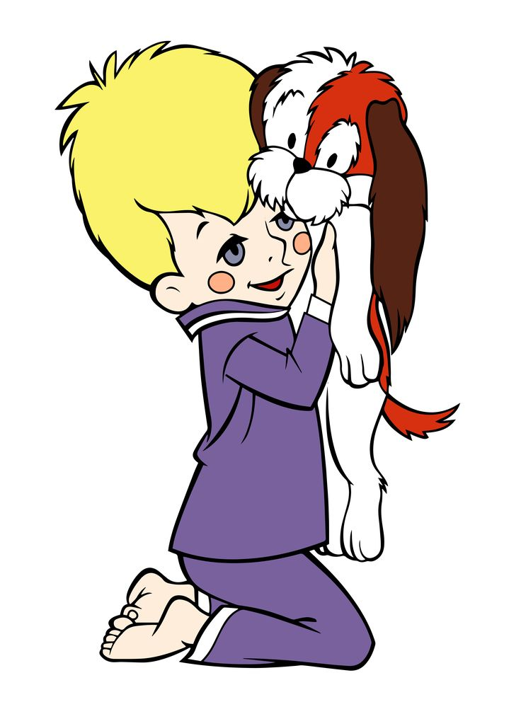
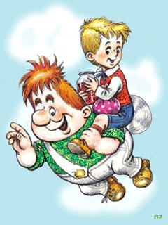

|  | В городе Стокгольме, на самой обыкновенной улице, в самом обыкновенном доме живет самая обыкновенная шведская семья по фамилии Свантессы. Семья эта состоит из самого обыкновенного папы, самой обыкновенной мамы и трех самых обыкновенных ребят – Боссе, Бетан и Малыша. – Я совсем не самый |
 |
Но это, конечно, неправда. Ведь на свете столько мальчишек, которым семь лет, у которых голубые глаза, немытые уши и разорванные на коленках штанишки, что сомневаться тут нечего. Малыш - самый обыкновенный мальчик.
Астрид Линдгрен